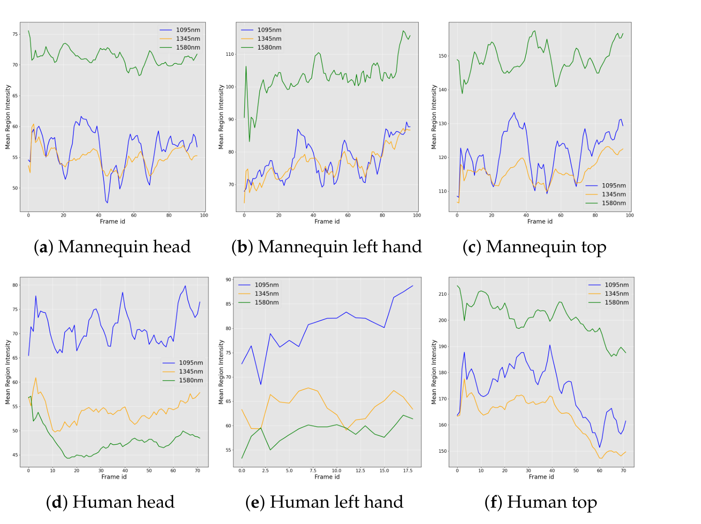
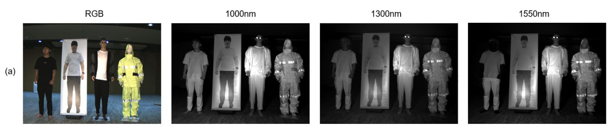
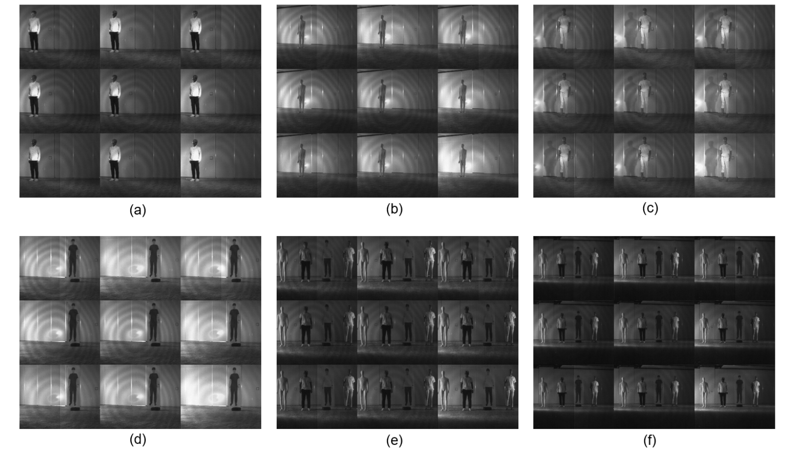

Abstract
This paper presents a novel approach to material classification using short-wave infrared (SWIR) imaging, aimed at applications where differentiating visually similar objects based on material properties is essential, such as in autonomous driving. Traditional vision systems, relying on visible spectrum imaging, struggle to distinguish between objects with similar appearances but different material compositions. Our method leverages SWIR’s distinct reflectance characteristics, particularly for materials containing moisture, and demonstrates a significant improvement in accuracy. Specifically, SWIR data achieved near-perfect classification results with an accuracy of 99% for distinguishing real from artificial objects, compared to 77% with visible spectrum data. In object detection tasks, our SWIR-based model achieved a mean average precision (mAP) of 0.98 for human detection and up to 1.00 for other objects, demonstrating its robustness in reducing false detections. This study underscores SWIR’s potential to enhance object recognition and reduce ambiguity in complex environments, offering a valuable contribution to material-based object recognition in autonomous driving, manufacturing, and beyond.
Approach
This study uses material-dependent spectral reflectance to distinguish objects that can look similar in the visible spectrum. It focuses on real versus artificial fruits and vegetables and on humans versus mannequins and human-image banners, rather than assigning generic labels such as wood or steel.
Moisture-sensitive spectral band selection
The paper compares reflectance at 1095 nm and 1580 nm, with 1345 nm as an intermediate reference. In the measured human and mannequin regions, differences in moisture content produce different relative intensity patterns. Clothing made from similar materials does not show the same skin-versus-plastic distinction.


Datasets
The fruit and vegetable dataset contains bell peppers, bananas, carrots, and oranges, with three real and three artificial objects of each type: 24 objects in total. Paired RGB and SWIR images are captured for each object. Two objects are used for training and the remaining object for inference.
For object detection, the Human vs. Others dataset contains a person, a cotton/fabric mannequin, a plastic mannequin, and a banner with a human image. Individually captured objects are used for training; scenes containing multiple objects are used for inference.

Experimental Results
Real / artificial classification
The study fine-tunes a pretrained ResNet-18 separately on RGB and SWIR data.
| Object type | RGB accuracy | SWIR accuracy |
|---|---|---|
| Banana | 0.58 | 0.92 |
| Carrot | 0.75 | 0.99 |
| Orange | 0.73 | 1.00 |
| Bell pepper | 0.77 | 1.00 |
Human vs. Others object detection
For YOLOv7 detection, images at 1095, 1345, and 1580 nm are assigned to the model’s three input channels.
| Class | Precision | Recall | mAP 0.5 | mAP 0.9 |
|---|---|---|---|---|
| Human | 0.987 | 0.987 | 0.98 | 0.852 |
| Banner | 0.998 | 1.00 | 1.00 | 0.701 |
| Cotton mannequin | 0.879 | 0.981 | 0.981 | 0.854 |
| Plastic mannequin | 1.00 | 0.976 | 0.998 | 0.875 |
Experimental scope
The detection dataset was captured in a controlled environment, and the paper acknowledges that its objects have some appearance-based differences. The fruit/vegetable experiment provides an additional test of visually similar real and artificial objects. Broader environmental variation and experiments in fog and fire smoke are identified as future work, not as evaluated results.
Data Access
The dataset is publicly available on HuggingFace. The dataset includes paired visible and SWIR images for the real/artificial classification experiment.
Open the RGB–SWIR Fruit and Vegetable Dataset on Hugging Face
BibTeX
@article{song2024swir,
title = {{Short-Wave Infrared (SWIR) Imaging for Robust Material Classification: Overcoming Limitations of Visible Spectrum Data}},
author = {Song, Hanbin and Yeo, Sanghyeop and Jin, Youngwan and Park, Incheol and Ju, Hyeongjin and Nalcakan, Yagiz and Kim, Shiho},
journal = {Applied Sciences},
volume = {14},
pages = {11049},
year = {2024},
doi = {10.3390/app142311049},
url = {https://doi.org/10.3390/app142311049}
}
Original publication
Hanbin Song, Sanghyeop Yeo, Youngwan Jin, Incheol Park, Hyeongjin Ju, Yagiz Nalcakan, Shiho Kim. Short-Wave Infrared (SWIR) Imaging for Robust Material Classification: Overcoming Limitations of Visible Spectrum Data.
Applied Sciences, 2024. Volume 14 · Article 11049.
DOI: 10.3390/app142311049